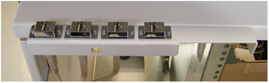
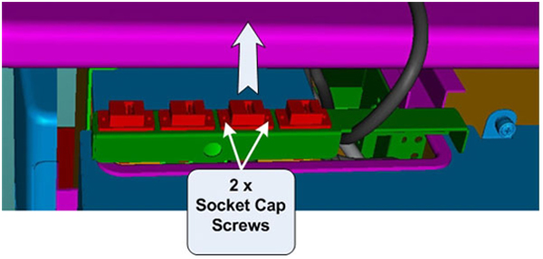

Operating Documentation
Direction 5193574-800, Rev# 22
LightSpeed 7.X Service Methods
Module Version 3.0, Version Date 9/17/09
Operating Documentation |
| Required Persons | Preliminary Reqs | Procedure | Finalization |
|---|---|---|---|
| 1 |
This procedure describes and illustrates the steps necessary to replace connectors located on the Upper Bulkhead Panel of the Operator Console. Since the Upper Bulkhead Panel utilizes connectors with disconnects on both the front and rear of the Upper Bulkhead Panel, only the connectors will be supplied as FRUs. The sheet metal panel should last the life of the equipment.
Illustration 1: Upper Bulkhead Panel

| Last Revised: | 4 May 2009 |
| Item | Qty | Effectivity | Part# | Manufacturer | |
|---|---|---|---|---|---|
| Standard FE Toolkit | 1 | - | - | - | |
| 2 mm Hex Key Wrench | 1 | - | - | - | |
| Item | Qty | Effectivity | Part# | Manufacturer | |
|---|---|---|---|---|---|
| USB Connector | 4 | - | 5307278 | - | |
| ||||
| ELECTROCUTION HAZARD | ||||
| HIGH VOLTAGE PRESENT | ||||
| USE PROPER LOCKOUT / TAGOUT PROCEDURES BEFORE REPLACING THE COMPONENTS. |
| ||||
| FOLLOW ALL REQUIRED SAFETY AND PPE PROCEDURES CUSTOMARY FOR YOUR ORGANIZATION WHEN WORKING ON THIS PRODUCT. | ||||
| Condition | Reference | Effectivity |
|---|---|---|
Access to both the front and rear of the Operator Console is required. Move the console away from walls and remove obstacles in room. | - | - |
Only trained service personnel should service the GE CT Scanner. | - | - |
Select one of the following methods to power off the Operator Console:
If applications are running, click the Shut Down icon and select Shut Down.
If applications are down, open a Unix Shell using the Toolchest, type: {ctuser@hostname} halt. <Enter>.
The Operator Console monitor will display a System Halted message when it is acceptable to power off the Operator Console.
Power OFF the Operator Console at the front panel switch. (See Illustration 2.)
Illustration 2: Console Power Switch

Remove Console Rear Cover and set aside.
Disconnect cables connected to the defective USB Connector on the Upper Bulkhead Panel.
| NOTE: | Take care to check that the cables are properly labeled for their respective connections. |
Uninstall USB Connector from the Upper Bulkhead Panel by removing the two (2) 3mm socket cap mounting screws holding the connector to the panel.
Illustration 3: Upper Bulkhead Panel Mounting

Remove the USB Connector from the Upper Bulkhead Panel.
Install the USB Connector on the Upper Bulkhead Panel using the two (2) 3mm socket cap mounting screws removed earlier. Torque to 0.5 N-m.
Reconnect the USB Cables to the Upper Bulkhead Panel.
Illustration 4: Upper Bulkhead Panel Connections

| NOTE: | The GOC6 Operator Console may utilize PS/2 or USB Keyboards and Mouse. If console is equipped with USB Keyboard and/or Mouse, connect these devices as shown above. PS/2 Keyboards and/or Mouse connect directly to the respective PS/2 Ports on the Host Computer. |
Apply power to the console using the operator console power switch.
Test the replacement Upper Bulkhead Panel connector by verifying that communications and signal paths have been restored. Verify that the system boots properly and that Keyboard, Mouse, Trackball and Bar Code Reader (if so equipped) function properly.
| NOTE: | No other verification is necessary. |
Replace Console Rear Cover.